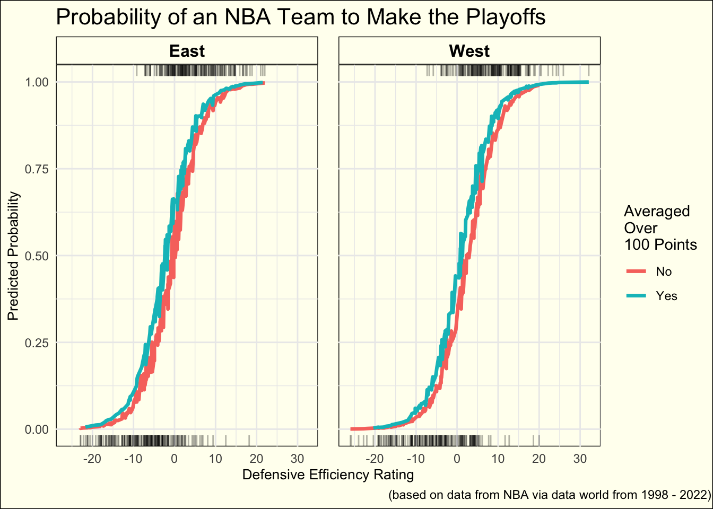

# loading in necessary packages
library(tidyverse)
library(here)
library(kableExtra)
library(broom)
library(modelr)
library(knitr)Intoduction
For this blog post, I wanted to take on more of a challenging idea which was to both create a prediction model and visualize that data. To to this, I also wanted to combine this with my passion for sports, particularly basketball. It felt only right to use NBA data to accomplish this. On Data World, I found a data set that had team stats from the 97-98 season all the way until the 21-22 season.
# loading in data set
team_stats <- read_csv(here('data/NBA_Team_Stats.csv'))Here is an example of what the data set looks like directly from the source.
kable(head(team_stats))| No | Team | G | Min | Pts | Reb | Ast | Stl | Blk | To | Pf | Dreb | Oreb | Fgm-a | Pct…15 | 3gm-a | Pct…17 | Ftm-a | Pct…19 | Eff | Deff | Year |
|---|---|---|---|---|---|---|---|---|---|---|---|---|---|---|---|---|---|---|---|---|---|
| 1 | Chicago | 103 | 48.4 | 96.0 | 44.1 | 23.1 | 8.6 | 4.3 | 13.0 | 21.1 | 29.2 | 14.9 | 36.7-81.7 | 0.449 | 3.9-12.0 | 0.323 | 18.7-25.2 | 0.741 | 111.6 | 17.5 | 1997-1998 |
| 2 | Utah | 102 | 48.3 | 98.6 | 40.8 | 24.7 | 7.6 | 4.8 | 14.7 | 24.3 | 29.5 | 11.3 | 35.9-74.3 | 0.483 | 3.1-8.4 | 0.368 | 23.8-30.9 | 0.768 | 116.3 | 17.5 | 1997-1998 |
| 3 | Phoenix | 86 | 48.6 | 99.3 | 41.9 | 25.6 | 9.2 | 5.3 | 14.4 | 21.7 | 29.8 | 12.1 | 38.2-82.0 | 0.466 | 5.2-14.7 | 0.355 | 17.7-23.6 | 0.747 | 117.1 | 13.6 | 1997-1998 |
| 4 | L.A.Lakers | 95 | 48.3 | 104.8 | 42.9 | 24.3 | 8.7 | 6.8 | 14.7 | 22.9 | 29.7 | 13.2 | 38.0-79.1 | 0.480 | 6.1-17.3 | 0.350 | 22.8-33.7 | 0.675 | 120.8 | 13.2 | 1997-1998 |
| 5 | San Antonio | 91 | 48.4 | 92.5 | 44.1 | 21.9 | 6.2 | 6.9 | 15.3 | 21.2 | 32.2 | 11.9 | 35.1-75.1 | 0.468 | 3.7-10.8 | 0.344 | 18.5-26.8 | 0.688 | 108.0 | 13.1 | 1997-1998 |
| 6 | Indiana | 98 | 48.4 | 95.3 | 38.6 | 22.4 | 7.8 | 4.5 | 13.6 | 23.0 | 28.2 | 10.4 | 35.0-74.9 | 0.468 | 5.0-12.9 | 0.387 | 20.3-26.6 | 0.763 | 109.0 | 12.2 | 1997-1998 |
My first step in this project is to clean and format this data in a way that I can work with it in the way I want too. As well, below is a screenshot of what all the variable names mean.
Data Cleaning
team_stats_tidy <-
team_stats |>
mutate(Team = factor(Team))
team_stats_tidy <-
team_stats_tidy |>
mutate(Team = fct_recode(Team,
Bulls = "Chicago",
Jazz = "Utah",
Suns = "Phoenix",
Lakers = "L.A.Lakers",
Spurs = "San Antonio",
Pacers = "Indiana",
Heat = "Miami",
Thunder = "Seattle",
Hawks = "Atlanta",
Knicks = "New York",
Cavaliers = "Cleveland",
Hornets = "Charlotte",
Trailblazers = "Portland",
Timberwolves = "Minnesota",
Wizards = "Washington",
Pistons = "Detroit",
Nets = "New Jersey",
Bucks = "Milwaukee",
Magic = "Orlando",
Rockets = "Houston",
Celtics = "Boston",
`76ers` = "Philadelphia",
Kings = "Sacramento",
Mavericks = "Dallas",
Grizzlies = "Vancouver",
Clippers = "L.A.Clippers",
Warriors = "Golden State",
Raptors = "Toronto",
Nuggets = "Denver",
Pelicans = "New Orleans",
Grizzlies = "Memphis",
Nets = "Brooklyn",
Thunder = "Oklahoma City"))team_stats_tidy <-
team_stats_tidy |>
separate(`Fgm-a`,
sep = "-",
into = c("FGM", "FGA")) |>
separate(`3gm-a`,
sep = "-",
into = c("3PM", "3PA")) |>
separate(`Ftm-a`,
sep = "-",
into = c("FTM", "FTA"))team_stats_tidy <-
team_stats_tidy |>
rename(FG_pct = Pct...15,
`3P_pct` = Pct...17,
FT_pct = Pct...19) |>
mutate(FGM = as.numeric(FGM),
FGA = as.numeric(FGA),
`3PM` = as.numeric(`3PM`),
`3PA` = as.numeric(`3PA`),
FTM = as.numeric(FTM),
FTA = as.numeric(FTA),
FG_pct = FG_pct * 100,
`3P_pct` = `3P_pct` * 100,
FT_pct = FT_pct * 100) |>
mutate(Year = str_sub(Year,
6),
Year = as.numeric(Year))team_stats_tidy <-
team_stats_tidy |>
mutate(Conference = if_else(Team %in% c("Celtics", "Bucks", "Cavaliers", "Knicks", "76ers", "Magic", "Heat", "Pacers", "Bulls", "Hawks", "Nets", "Raptors", "Hornets", "Wizards", "Pistons"), "East", "West"),
Playoffs = if_else(G > 82, 1, 0)) |>
mutate(over100 = factor(if_else(Pts >= 100, "Yes", "No")))Here is an example of what the data now looks like
kable(head(team_stats_tidy))| No | Team | G | Min | Pts | Reb | Ast | Stl | Blk | To | Pf | Dreb | Oreb | FGM | FGA | FG_pct | 3PM | 3PA | 3P_pct | FTM | FTA | FT_pct | Eff | Deff | Year | Conference | Playoffs | over100 |
|---|---|---|---|---|---|---|---|---|---|---|---|---|---|---|---|---|---|---|---|---|---|---|---|---|---|---|---|
| 1 | Bulls | 103 | 48.4 | 96.0 | 44.1 | 23.1 | 8.6 | 4.3 | 13.0 | 21.1 | 29.2 | 14.9 | 36.7 | 81.7 | 44.9 | 3.9 | 12.0 | 32.3 | 18.7 | 25.2 | 74.1 | 111.6 | 17.5 | 1998 | East | 1 | No |
| 2 | Jazz | 102 | 48.3 | 98.6 | 40.8 | 24.7 | 7.6 | 4.8 | 14.7 | 24.3 | 29.5 | 11.3 | 35.9 | 74.3 | 48.3 | 3.1 | 8.4 | 36.8 | 23.8 | 30.9 | 76.8 | 116.3 | 17.5 | 1998 | West | 1 | No |
| 3 | Suns | 86 | 48.6 | 99.3 | 41.9 | 25.6 | 9.2 | 5.3 | 14.4 | 21.7 | 29.8 | 12.1 | 38.2 | 82.0 | 46.6 | 5.2 | 14.7 | 35.5 | 17.7 | 23.6 | 74.7 | 117.1 | 13.6 | 1998 | West | 1 | No |
| 4 | Lakers | 95 | 48.3 | 104.8 | 42.9 | 24.3 | 8.7 | 6.8 | 14.7 | 22.9 | 29.7 | 13.2 | 38.0 | 79.1 | 48.0 | 6.1 | 17.3 | 35.0 | 22.8 | 33.7 | 67.5 | 120.8 | 13.2 | 1998 | West | 1 | Yes |
| 5 | Spurs | 91 | 48.4 | 92.5 | 44.1 | 21.9 | 6.2 | 6.9 | 15.3 | 21.2 | 32.2 | 11.9 | 35.1 | 75.1 | 46.8 | 3.7 | 10.8 | 34.4 | 18.5 | 26.8 | 68.8 | 108.0 | 13.1 | 1998 | West | 1 | No |
| 6 | Pacers | 98 | 48.4 | 95.3 | 38.6 | 22.4 | 7.8 | 4.5 | 13.6 | 23.0 | 28.2 | 10.4 | 35.0 | 74.9 | 46.8 | 5.0 | 12.9 | 38.7 | 20.3 | 26.6 | 76.3 | 109.0 | 12.2 | 1998 | East | 1 | No |
Building a model
I decided to use some of the metrics in the data set to predict whether a team would make the playoffs or not. I made a response variables Playoffs by using a condition of if a team played more than 82 games or not in season.
In order to make sure that this model isn’t testing using data that knows the answer, we should get rid of both of the No and G variables. We also don’t care about what team it is so we should get rid of the team factor.
team_stats_tidy <-
team_stats_tidy |>
select(-(c("No","G", "Team")))playoffs_mod <-
glm(Playoffs ~ .,
data = team_stats_tidy,
family = 'binomial')
summary(playoffs_mod)
Call:
glm(formula = Playoffs ~ ., family = "binomial", data = team_stats_tidy)
Deviance Residuals:
Min 1Q Median 3Q Max
-3.2910 -0.4682 -0.0138 0.4869 2.3014
Coefficients:
Estimate Std. Error z value Pr(>|z|)
(Intercept) -191.15365 107.63999 -1.776 0.07576 .
Min -0.01774 0.01617 -1.097 0.27277
Pts -2.07946 2.25140 -0.924 0.35568
Reb -2.45701 2.54001 -0.967 0.33338
Ast -0.97115 1.29124 -0.752 0.45199
Stl -0.61265 1.30943 -0.468 0.63987
Blk -1.38329 1.28452 -1.077 0.28153
To 0.61609 1.28162 0.481 0.63072
Pf -0.01272 0.09530 -0.133 0.89384
Dreb 1.52684 2.40699 0.634 0.52586
Oreb 1.41889 2.41567 0.587 0.55695
FGM -3.86394 3.17687 -1.216 0.22388
FGA 3.41921 1.41329 2.419 0.01555 *
FG_pct 4.37258 1.57137 2.783 0.00539 **
`3PM` -0.66235 1.85549 -0.357 0.72112
`3PA` 0.71959 0.29736 2.420 0.01553 *
`3P_pct` 0.34611 0.16373 2.114 0.03453 *
FTM -1.44212 2.16142 -0.667 0.50464
FTA 2.44456 1.59264 1.535 0.12480
FT_pct 0.49414 0.34478 1.433 0.15180
Eff 0.84420 1.28606 0.656 0.51155
Deff 0.33934 0.04286 7.917 2.43e-15 ***
Year -0.02836 0.03885 -0.730 0.46532
ConferenceWest -0.78439 0.25445 -3.083 0.00205 **
over100Yes 0.20287 0.41900 0.484 0.62825
---
Signif. codes: 0 '***' 0.001 '**' 0.01 '*' 0.05 '.' 0.1 ' ' 1
(Dispersion parameter for binomial family taken to be 1)
Null deviance: 1004.95 on 724 degrees of freedom
Residual deviance: 497.55 on 700 degrees of freedom
AIC: 547.55
Number of Fisher Scoring iterations: 6As this is a blog for data visualization, I am going to choose some significant predictors to make it so it can be visualized with two of them being qualitative predictors to demonstrate more visualization. Here this is Deff, Conference, FG_pct, and over100. Shown below is my model with their coefficients and p values.
playoffs_mod <- glm(Playoffs ~ Deff + Conference + FG_pct + over100,
data = team_stats_tidy,
family = 'binomial')
kable(tidy(playoffs_mod))| term | estimate | std.error | statistic | p.value |
|---|---|---|---|---|
| (Intercept) | 5.1090840 | 4.2254638 | 1.209118 | 0.2266175 |
| Deff | 0.2737298 | 0.0214107 | 12.784727 | 0.0000000 |
| ConferenceWest | -0.7893214 | 0.2255191 | -3.500020 | 0.0004652 |
| FG_pct | -0.1124503 | 0.0948899 | -1.185061 | 0.2359933 |
| over100Yes | 0.5922806 | 0.2436075 | 2.431291 | 0.0150451 |
grid <-
team_stats_tidy |>
data_grid(
Deff = seq_range(Deff, n = 50),
FG_pct = seq_range(FG_pct, n = 10),
Conference = c("West", "East"),
over100 = c("Yes", "No")
)aug_stats <-
augment(playoffs_mod,
se_fit = TRUE)
aug_stats# A tibble: 725 × 12
Playoffs Deff Conference FG_pct over100 .fitted .se.fit .resid .hat
<dbl> <dbl> <chr> <dbl> <fct> <dbl> <dbl> <dbl> <dbl>
1 1 17.5 East 44.9 No 4.85 0.416 0.125 0.00133
2 1 17.5 West 48.3 No 3.68 0.410 0.223 0.00405
3 1 13.6 West 46.6 No 2.80 0.304 0.343 0.00497
4 1 13.2 West 48 Yes 3.13 0.301 0.293 0.00365
5 1 13.1 West 46.8 No 2.64 0.302 0.371 0.00567
6 1 12.2 East 46.8 No 3.19 0.335 0.285 0.00428
7 1 10 East 44.9 No 2.80 0.277 0.344 0.00416
8 1 9.4 West 47.1 Yes 2.19 0.236 0.461 0.00505
9 1 7.3 East 45.4 No 2.00 0.235 0.503 0.00580
10 1 7.2 East 44.6 No 2.06 0.236 0.489 0.00558
# ℹ 715 more rows
# ℹ 3 more variables: .sigma <dbl>, .cooksd <dbl>, .std.resid <dbl>Next I need to convert the .fitted values to predicted probabilities.
aug_stats <-
aug_stats |>
mutate(.predprob = (exp(.fitted) / (1 + exp(.fitted))))
aug_stats# A tibble: 725 × 13
Playoffs Deff Conference FG_pct over100 .fitted .se.fit .resid .hat
<dbl> <dbl> <chr> <dbl> <fct> <dbl> <dbl> <dbl> <dbl>
1 1 17.5 East 44.9 No 4.85 0.416 0.125 0.00133
2 1 17.5 West 48.3 No 3.68 0.410 0.223 0.00405
3 1 13.6 West 46.6 No 2.80 0.304 0.343 0.00497
4 1 13.2 West 48 Yes 3.13 0.301 0.293 0.00365
5 1 13.1 West 46.8 No 2.64 0.302 0.371 0.00567
6 1 12.2 East 46.8 No 3.19 0.335 0.285 0.00428
7 1 10 East 44.9 No 2.80 0.277 0.344 0.00416
8 1 9.4 West 47.1 Yes 2.19 0.236 0.461 0.00505
9 1 7.3 East 45.4 No 2.00 0.235 0.503 0.00580
10 1 7.2 East 44.6 No 2.06 0.236 0.489 0.00558
# ℹ 715 more rows
# ℹ 4 more variables: .sigma <dbl>, .cooksd <dbl>, .std.resid <dbl>,
# .predprob <dbl>stats_playoffs <-
team_stats_tidy |>
filter(Playoffs == 1)
stats_nplayoffs <-
team_stats_tidy |>
filter(Playoffs == 0)Figure 1
#|fig-width: 12
aug_stats|>
ggplot(aes(x = Deff,
y = .predprob)) +
geom_line(aes(colour = over100),
linewidth = 1.2) +
geom_rug(data = stats_playoffs,
sides = 't',
alpha = 0.3,
aes(y = Playoffs)) +
geom_rug(data = stats_nplayoffs,
sides = 'b',
alpha = 0.3,
aes(y = Playoffs)) +
labs(x = "Defensive Efficiency Rating",
y = "Predicted Probability",
colour = "Averaged\nOver\n100 Points",
title = "Probability of an NBA Team to Make the Playoffs",
caption = "(based on data from NBA via data world from 1998 - 2022)") +
theme_minimal() +
facet_wrap(~Conference) +
theme(axis.title = element_text(size = 10,),
strip.text = element_text(size = 12),
plot.title = element_text(size = 16,
hjust = 0),
plot.subtitle = element_text(size = 6),
panel.spacing = unit(1, 'lines'),
strip.text.x = element_text(color = "black",
face = "bold"),
strip.background = element_rect(colour = "black",
fill = "ivory"),
panel.background = element_rect(fill = "ivory"),
plot.background = element_rect(fill = "ivory"),
plot.caption = element_text(hjust = 1.5)) +
scale_x_continuous(breaks=seq(-30, 40, 10))
Conclusion
This plot shows the differences in the probability of a team to make the playoffs dependent on their defensive efficiency rating, their field goal percentage, their conference, and if they averaged over 100 points or not. What we can see here is that for a team in the Eastern conference, they need a lower defensive efficiency to have an over .5 probability of making the playoffs. As well, a team’s probability of making the playoffs is higher if they averaged over 100 points.
Connections to Class
In this blog, I used many tactics from class. One being the data visualization aspects of using faceting, and grouping. I put the geom_rug on as well and am visualizing my predicted probabilities for each observation. I also used our technique of creating a logistic regression model.